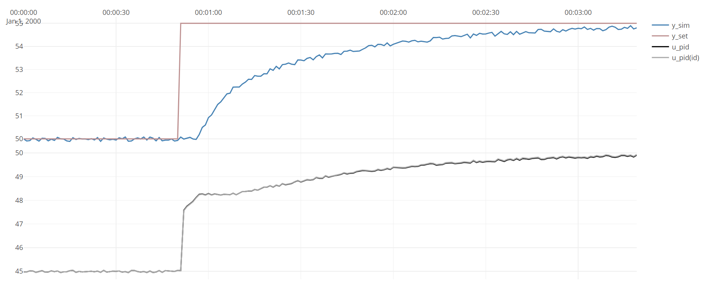

This example shows how the PidIdentifier class can identify the
paramters of a PID-controllers giving only the time-series.
The dataset generated is simulated using PlantSimulator, the
code of this example:
void PidModelId()
{
// create a PlantSimulator simulated dataset with known paramters
double timeBase_s = 1;
int N = 200;
double noiseAmplitude = 0.1;
var pidParameters1 = new PidParameters()
{
Kp = 0.5,
Ti_s = 20
};
UnitParameters modelParameters1 = new UnitParameters
{
WasAbleToIdentify = true,
TimeConstant_s = 10,
LinearGains = new double[] { 1 },
TimeDelay_s = 5,
Bias = 5
};
var processModel1 = new UnitModel(modelParameters1, timeBase_s, "Process1");
var pidModel1 = new PidModel(pidParameters1, timeBase_s, "PID1");
var processSim = new PlantSimulator(
new List<ISimulatableModel> { pidModel1, processModel1 });
processSim.ConnectModels(processModel1, pidModel1);
processSim.ConnectModels(pidModel1, processModel1);
var inputData = new TimeSeriesDataSet(timeBase_s);
inputData.Add(processSim.AddSignal(pidModel1, SignalType.Setpoint_Yset),
TimeSeriesCreator.Step(N / 4, N, 50, 55));
inputData.Add(processSim.AddSignal(processModel1, SignalType.Disturbance_D),
TimeSeriesCreator.Noise(N, noiseAmplitude)) ;
processSim.Simulate(inputData, out TimeSeriesDataSet simData);
// do the actual identification
var pidDataSet = processSim.GetUnitDataSetForPID(inputData.Combine(simData), pidModel1);
var pidId = new PidIdentifier();
var idResult = pidId.Identify(ref pidDataSet);
// view results
Console.WriteLine(idResult.ToString());
Plot.FromList(new List<double[]> {
simData.GetValues(processModel1.GetID(),SignalType.Output_Y_sim),
inputData.GetValues(pidModel1.GetID(),SignalType.Setpoint_Yset),
simData.GetValues(pidModel1.GetID(),SignalType.PID_U),
Array2D<double>.GetColumn(pidDataSet.U_sim,(int)INDEX.FIRST) },
new List<string>{ "y1=y_sim", "y1=y_set","y3=u_pid","y3=u_pid(id)" },timeBase_s); ;
}
The code generates the following figure, showing that the estimated
paramters fit the actual PID-output u very well:

The output of idResult.ToString() gives details on the model:
TimeSeriesAnalysis.Dynamic.PidParameters
-------------------------
ABLE to identify
Kp : 0,496
Ti : 19,7 sec
Td : 0 sec
Scaling not given, default values used:
Umin : 0
Umax : 100
Ymin : 0
Ymax : 100
NO gainsceduling
NO feedforward
Note that the estimated paramters are very close to the actual paramters.